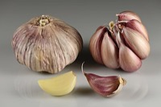

ニンニクの生産量
いちばん多くとれる都道府県
ニンニクが日本でいちばん多くとれるのは青森県です。1万1,700 tで、全国（1万7,600 t）の66%を占めます。

| 順位 | 都道府県 | 収穫量 | 全国に占める割合 |
|---|---|---|---|
| 1位 | 青森県 | 1万1,700 t | 66% |
| 2位 | 北海道 | 1,000 t | 5.7% |
| 3位 | 香川県 | 509 t | 2.9% |
この数字について
- 分類：ヒガンバナ科
- 全国の収穫量：1万7,600 t
- この数字が表すもの：収穫量（畑や田でとれた重さ）
- 調査：作物統計調査 作況調査（野菜） 令和6年産
- 11県分を調査（調査していない県は順位に入りません）